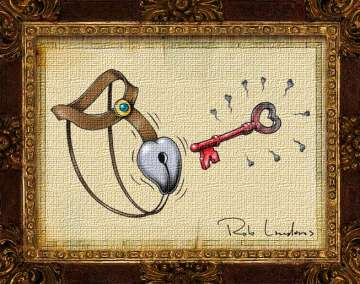

|

The Blacksmith and the Dancing Lady
An "interlewd" from the hysterical historical novel "Stolen from Gypsies".
- - - - - - - - - -
by Noble Smith
 Narration by Frederick Davidson Narration by Frederick Davidson
(courtesy Blackstone Audiobooks) |
| Download MP3 |
| 2.6 MB |
Duration: 9:06 |
 |
Click to buy |
 NCE UPON A TIME, a knight named Barron Pierre de Grimbouls was commanded by his liege lord the King to take upon himself mantle of a crusader, and join a quest to regain the holy city of Jerusalem from the infidels. Before he departed on this long journey, however, de Grimbouls ordered the village blacksmith to fashion a belt of chastity for his obscenely beautiful wife, Lady Penelope. The blacksmith, whose name was Johan Longstaff, labored seven days and nights to create an unbreakable, yet non-chafing nest-guard of gold and silver. But when he brought the belt to the castle and presented it to Pierre de Grimbouls, Johan caught a glimpse of the Lady Penelope and fell deeply and sinfully in love with her, and likewise she was smitten by the handsome young smith who in no way resembled her squat, brutish, ogre-like husband. NCE UPON A TIME, a knight named Barron Pierre de Grimbouls was commanded by his liege lord the King to take upon himself mantle of a crusader, and join a quest to regain the holy city of Jerusalem from the infidels. Before he departed on this long journey, however, de Grimbouls ordered the village blacksmith to fashion a belt of chastity for his obscenely beautiful wife, Lady Penelope. The blacksmith, whose name was Johan Longstaff, labored seven days and nights to create an unbreakable, yet non-chafing nest-guard of gold and silver. But when he brought the belt to the castle and presented it to Pierre de Grimbouls, Johan caught a glimpse of the Lady Penelope and fell deeply and sinfully in love with her, and likewise she was smitten by the handsome young smith who in no way resembled her squat, brutish, ogre-like husband.
Now it must be told that Pierre de Grimbouls was a member of the secret order of knight Templars, and was adept of the black arts of magic, which he had studied in secret since his youth with a sorcerer who lived in a dank cave inside the hollow hills. Pierre de Grimbouls was possessed of many unnatural skills, such as the ability to speak to familiars in the shape of animals, and the power to bewitch others with his honeyed voice. Indeed, he had used all his dark wiles to convince the good Count Frutagar, Penelope's father, into giving him his daughter's hand, for the Count doted upon his only child, and would have never, in sound mind, married her to such a wart faced, vile hearted man.
On the day that Longstaff brought the belt to his castle, Pierre de Grimbouls at once sensed the mutual liking that had occurred betwixt his wife and the smith, and so he had Johan thrown in the dungeon. Upon the lad's wrist he had the dungeon master place cuffs of cold metal, and attached to these were lead covered gauntlets. Thus trapped and fettered, de Grimbouls was confident that Longstaff would never be able to fashion another key to the chastity belt lock, and hence partake of his wife's loin-treasure.
Furthermore, de Grimbouls took the key that fit the lock of the cuckold proof cordon, and put a spell clever spell on it, so that if the key came within six inches and one half inch of the key-hole, it would turn molten hot to the touch and burn the holder's fingers like cruel fire. And what's more, he also put a curse on Penelope herself so that if the key came within six paces and one half pace of her, she would become afflicted with Saint Vitus' Dance. Thus it would be impossible for any man to even hold the burning key, let alone fit it into the wildly vibrating, and oscillating lock which encircled the loins of the dancing lady.
Johan sat in the dungeon for many a week, and he cursed Pierre de Grimbouls for his untrustworthy and treacherous nature, and vowed that he would have his revenge. Then one night, the Lady Penelope sneaked into the foul dungeon and spoke to him through a chink in the stone, and happy was he to hear her sweet voice in that accursed place, and happier still was he when on subsequent visitations, she brought him dainties from her table, and she gave him a sharp stick with which he could poke through the chink in the stone and skewer the morsels, though at first it was quite difficult for him to hold the skewer with his iron mitted fingers, but through much persistence and friendly words of encouragement, he mastered the pointy stick and became as dexterous with it as ever he was with knife and fork, and would thrust it through the hole, and poke Penelope's prize, and she would cry "Oh, Oh, well done, sir!" She would come every eve to that dark place, and they would whisper sweet nothings, until the cock came. And hence they fell hopelessly in love, but under these hopeless circumstances, their love seemed all for not. But lo! The Lady Penelope's desire for young Johan became so passionate and inflamed, that she took to the fever and consequently fell into a dire, fitful sleep that would not end.
Six months went by and word came to the castle from a road weary messenger that the Barron had died from the flux no less than five hundred miles from the gates of the Holy City. Lady Penelope's father, Count Frutagar, a knight in his own right, came to fetch his daughter from the Barron's castle and take her back home with the intention of marrying her to the gouty Duke of Penbrook and thus gain his enemy's allegiance, but when he found Penelope in that awful slumber, he feared to move her lest she die. He consulted with the late Barron's physician, who explained to him that she was burning from a fire within her cursed loins, and to demonstrate the heat emanating from that place, he did cook an egg upon her chastity belt. Count Frutagar was taken aback by this uncanny heat, and made a proclamation stating that any young man who could place the enchanted key into his daughter's hole and unlock the belt would gain both her hand in marriage, and a generous dowry.
 Next page | One thousand men tried various means of unclasping that cursed girdle, and one thousand men failed in their quest. Next page | One thousand men tried various means of unclasping that cursed girdle, and one thousand men failed in their quest.
1, 2
|